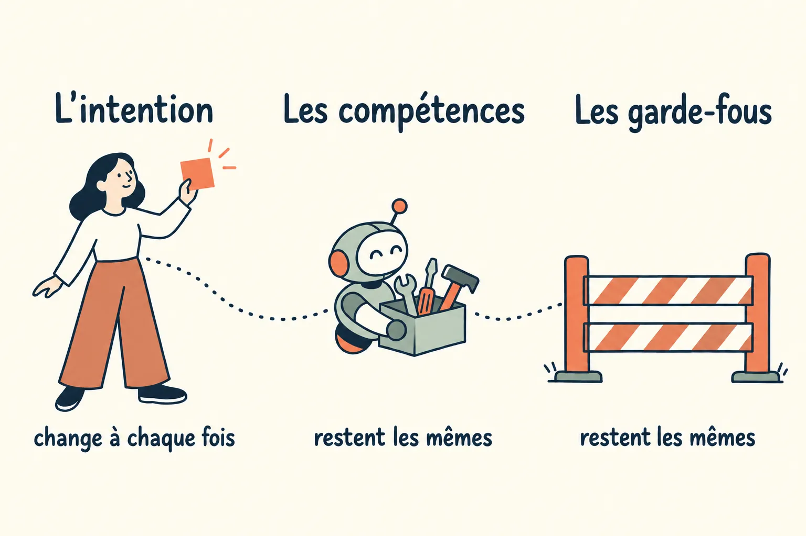
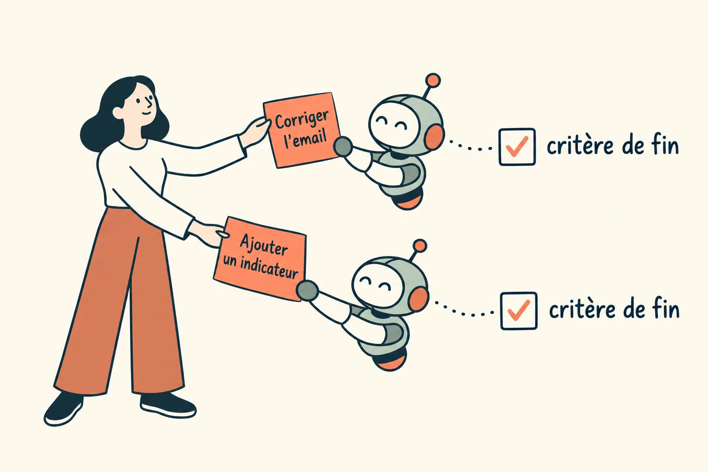
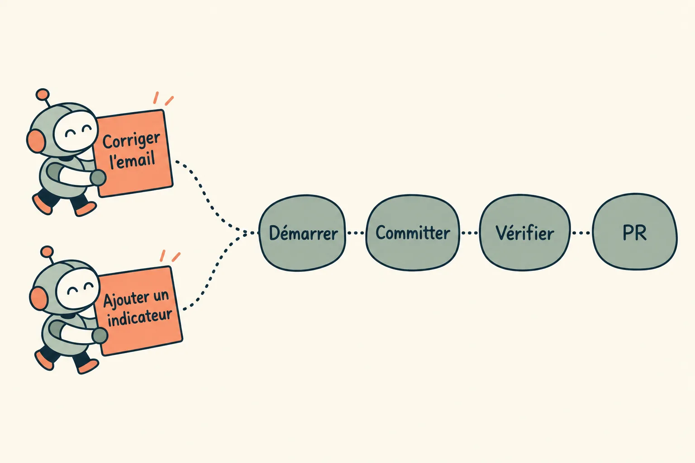
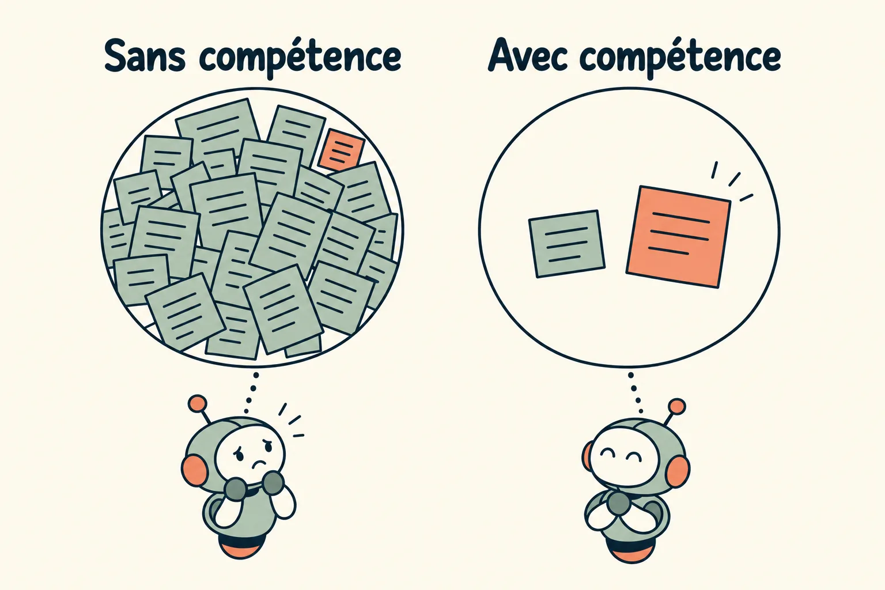
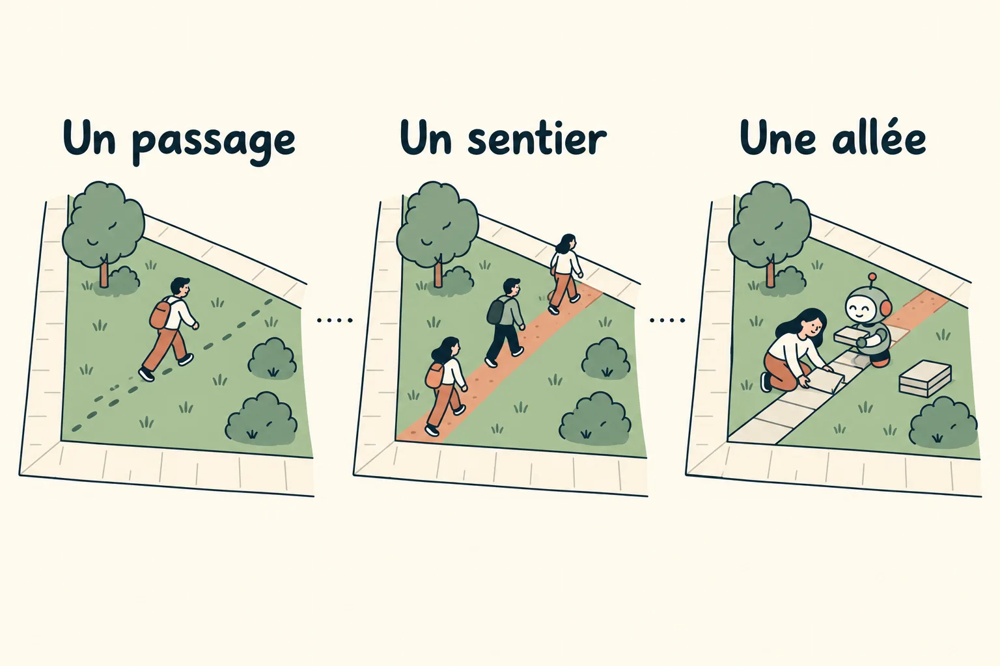
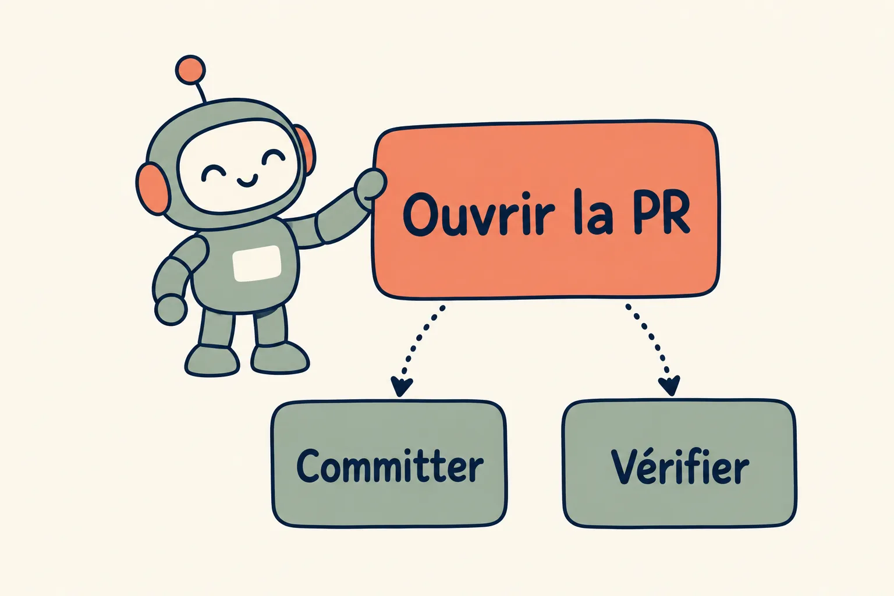
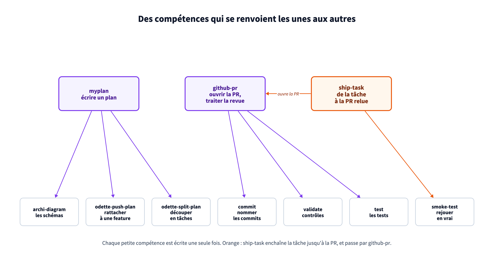
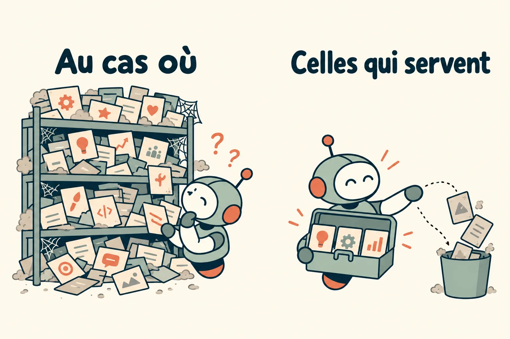
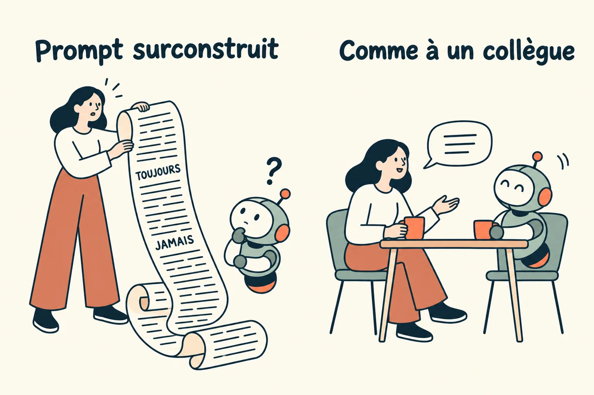

Des intentions qui changent, des compétences qui restent
Chaque demande faite à un agent porte une intention différente. Les gestes pour la mener à bien, eux, sont presque toujours les mêmes : démarrer la tâche, committer, vérifier, ouvrir la PR. Ces gestes sont des compétences. On les écrit une fois, à partir des retours qui reviennent, on les range dans le dépôt, et elles servent à l'identique pour un humain comme pour un agent autonome, quelle que soit l'intention.
Le problème de départ
Corriger un email parti à tort, ajouter un indicateur au bilan, diagnostiquer une alerte : chaque demande avait son intention, et pourtant on réexpliquait à l'agent les mêmes choses à chaque fois. Comment démarrer une tâche, comment committer, quoi vérifier, comment ouvrir une PR. Chaque développeur avait réglé son outil sur son poste, hors du dépôt, et les améliorations restaient locales : personne n'apprenait qu'une procédure avait changé. Quant à un agent qui tourne ailleurs que sur le poste, il n'avait rien de tout ça.
On a fini par séparer ce qui change d'une demande à l'autre, l'intention, de ce qui ne change pas : les compétences, qui disent comment faire, et les garde-fous (module 5), qui disent ce qu'on ne fait jamais.

De l'intention à la compétence
On y est arrivé en 4 étapes.
1. L'intention change à chaque demande
Une intention, c'est ce qu'on veut obtenir maintenant, sur ce travail-là. Elle tient en une phrase : « Quand un client en cours d'installation voit ses identifiants refusés, je veux qu'on vérifie avant de suspendre son intégration, pour ne plus lui envoyer d'email à tort. » Elle porte un but, et des critères qui disent quand c'est fini. C'est le gabarit de tâche de notre culture de l'écrit, et c'est le seul texte qu'un humain devrait avoir à écrire pour lancer le travail.
Parce que c'est le seul, cette parole doit être impeccable, au sens du premier des Quatre accords toltèques de Don Miguel Ruiz : dire exactement ce qu'on veut dire. Un mot flou (« l'email », « le client », « corrige vite ») laisse plusieurs lectures possibles, et l'agent en choisit une avec aplomb, sans signaler qu'il y en avait d'autres. Le nom exact de l'objet, le cas précis et un critère vérifiable lèvent l'ambiguïté avant la première ligne de code, là où elle coûte le moins cher.

La phrase d'intention suit le gabarit des tâches d'Odette, notre outil de pilotage : « Quand ..., je veux ..., pour ... », puis des critères d'acceptation. Le skill odette-task l'écrit à partir d'une demande dictée, et odette-start-task démarre la tâche : il la crée sous sa feature, crée et lie sa branche, puis ouvre l'espace de travail.
2. Les mêmes gestes reviennent
Posez ces 2 intentions côte à côte et regardez ce qu'elles demandent vraiment. Le but diffère, le chemin est le même : démarrer la tâche sur sa branche, committer, vérifier, ouvrir la PR et la suivre jusqu'au merge. Ils tiennent à la façon dont l'équipe travaille, quel que soit le but. Le déploiement n'en fait pas partie : après le merge, c'est la CD qui s'en charge.
Une compétence, c'est l'un de ces gestes écrit une fois : ses étapes, ses règles, les pièges déjà rencontrés. On la range dans un skill, une procédure que l'agent charge quand il en a besoin, quelle que soit l'intention qui l'y amène.
Un développeur y reconnaîtra le principe DRY, Don't Repeat Yourself, posé par Andy Hunt et Dave Thomas dans The Pragmatic Programmer en 1999 : chaque connaissance a une seule représentation dans le système, celle qui fait foi. La compétence est l'invariant de l'intention, ce qui reste quand l'intention change. On l'écrit une fois au lieu de la redire dans chaque demande, et une correction faite à cet endroit vaut pour toutes les intentions qui y passent.

Ces gestes sont des skills partagés à la racine du monorepo : odette-start-task pour démarrer, commit pour committer, validate pour vérifier avant la PR, github-pr pour l'ouvrir et la suivre jusqu'au merge. Après le merge, la CD déploie seule. Les sessions autonomes sont obligées de passer par eux.
3. Une compétence ne coûte plus d'attention
La pédagogie a un nom pour ce mécanisme. La théorie de la charge cognitive, formulée par le psychologue John Sweller en 1988, part d'un constat : la mémoire de travail ne manipule que quelques éléments à la fois. Le débutant qui résout un problème y entasse tout, la procédure comme le problème. L'expert a automatisé la procédure en un « schéma » rangé en mémoire à long terme : elle ne lui coûte presque plus rien, et sa mémoire de travail reste libre pour ce qui est nouveau. Pour Sweller, c'est le but même de l'enseignement : construire ces schémas, puis les automatiser.
Un agent fonctionne de la même façon, avec son contexte à la place de la mémoire de travail. Sans skill, il redéduit la procédure à chaque session, et cette déduction occupe son contexte et l'attention de celui qui relit. Avec un skill, la procédure tient en une ligne de description jusqu'au moment où elle sert. Le contexte reste à l'intention, la seule partie qui change. C'est la même économie que pour l'attention humaine (module 1).

Au démarrage d'une session, Claude Code ne lit de chaque skill que sa description, une ou deux lignes qui disent quand s'en servir. Le corps du skill n'entre dans le contexte qu'au moment où il sert.
4. La rétroaction fait naître les compétences
Une compétence ne s'écrit pas à l'avance, sur une liste de bonnes pratiques. Elle naît d'un retour qui revient. La revue remonte la même remarque sur 3 PR qui n'ont rien à voir, un déploiement se trompe 2 fois de la même façon : ce retour ne dépendait d'aucune intention, il devient une compétence, chargée avant d'écrire plutôt que corrigée après. Un retour isolé, lui, se corrige une fois et s'oublie.
Les urbanistes connaissent cette boucle. Quand les piétons coupent une pelouse toujours au même endroit, le passage répété finit par tracer un sentier : une ligne de désir. Certains aménageurs laissent même un terrain sans allées, attendent de voir où les sentiers apparaissent, puis les pavent. En 2014, l'université Virginia Tech a ainsi pavé les sentiers de terre qui traversaient sa grande pelouse centrale. Le passage qui revient devient une allée, comme le retour qui revient devient une compétence de l'équipe.

Côté outillage, chaque irritant qui fait perdre du temps est noté dans un journal partagé par toutes les sessions ; celui qui revient une 2e fois devient une règle écrite, le sentier qu'on pave.
Des compétences rangées comme du code
Si la compétence est ce qu'on factorise, le reste vient aussi de l'ingénierie logicielle : on range les compétences comme on range du code.
1. Des modules qui se référencent
Une fonction bien écrite en appelle d'autres plutôt que de recopier leur corps. Une compétence aussi. Celle qui ouvre une PR n'a pas à redire comment committer ni quelles vérifications lancer : elle renvoie aux compétences qui le savent. Chaque geste reste écrit à un seul endroit, et les compétences de haut niveau s'assemblent à partir des plus petites, comme des modules qui s'importent. Le corps d'une compétence appelée n'entre dans le contexte qu'au moment où elle sert.
Le risque est celui du code : un graphe de dépendances que plus personne ne suit. Une compétence qui en appelle 5, qui en appellent chacune 3, coûte plus d'attention qu'elle n'en économise. Nous gardons des renvois courts, nommés, sur un ou deux niveaux.

Pour traiter les retours de revue d'une PR, github-pr renvoie à validate et test avant de pousser, et à la règle de commit pour nommer les commits de correction. myplan charge archi-diagram pour les schémas d'un plan, puis passe la main à odette-push-plan et odette-split-plan pour le rattacher à une feature et le découper en tâches. Et ship-task les enchaîne de bout en bout : il prend une tâche, crée sa branche, écrit le plan, code, lance validate, test et smoke-test, ouvre la PR en brouillon par github-pr, puis traite la CI et la revue.

2. Peu de compétences, mais qui servent
Une compétence coûte même quand elle ne sert pas. Sa description est lue à chaque session, elle concurrence les autres au moment où l'agent choisit, et elle vieillit sans que personne la relise. 100 compétences écrites au cas où noient les 10 qui comptent, et l'agent finit par charger la mauvaise. Mieux vaut un petit nombre de compétences utilisées chaque semaine, qui ont chacune fait leurs preuves.
Le tri tient en 2 questions. Est-ce qu'elle sert ? Une compétence que personne n'a chargée depuis des semaines se retire, comme du code mort. Est-ce qu'elle change le résultat ? On la teste avec et sans (module 4) : si l'agent fait aussi bien sans elle, elle ne coûte que du contexte.

Les skills partagés du monorepo sont arrivés au fil de l'eau, un à quatre par mois depuis février, chacun quand un geste revenait assez souvent pour mériter d'être écrit. Il y en a peu, 14 à la racine, mais on y revient souvent : github-pr a changé 19 fois depuis fin août, à chaque manque constaté (la preuve de vérification dans la PR, les étapes d'après merge, les sessions sans humain), et odette-start-task 9 fois depuis septembre. Le dernier venu, ship-task, n'apporte presque rien de neuf : il enchaîne ceux qui existaient déjà.
Parler à l'agent comme à un collègue
Une intention se dit comme on la dirait à un collègue : naturellement, avec ce qu'on veut et pourquoi on le veut. On a tous été tentés par l'inverse, le prompt surconstruit, avec un rôle à endosser, une liste de cas et des TOUJOURS et des JAMAIS en majuscules. Il est long à écrire, au point qu'on repousse la demande, et il ne vaut que pour les cas qu'on a pensé à lister. Un collègue qui recevrait une telle note s'en étonnerait. Un modèle récent, lui, l'applique à la lettre, y compris là où elle n'a pas été pensée.
Parler naturellement ne veut pas dire parler vague : le ton est celui d'une conversation, le sens reste impeccable. La phrase porte le but, la raison et le critère de fin, comme à l'étape 1, et l'agent trouve le reste dans les compétences. Elle peut même se dicter : l'agent retire les hésitations de l'oral et garde l'intention (module 1).

Enseigner des règles de jugement
Ce qui vaut pour une demande vaut pour les instructions permanentes, celles des fichiers d'instructions de projet et des skills. On y enseigne des règles de jugement, comme on formerait un collègue, plutôt que des instructions précises à exécuter. Les modèles récents suivent les consignes à la lettre : une règle absolue, écrite en majuscules et répétée 3 fois, finit appliquée hors de son cas, et une liste de cas finit toujours par en oublier un. Une intention bien expliquée couvre aussi les cas qu'on n'avait pas prévus.
Le guide d'Anthropic sur le prompting de ses modèles récents va dans ce sens. Il conseille d'expliquer pourquoi une consigne compte, et de remplacer « CRITICAL: You MUST use this tool when... » par un simple « Use this tool when... » : ces modèles réagissent davantage aux instructions, et le ton appuyé les fait déclencher à tort.
- Dire pourquoi. Le contexte et la raison d'une consigne permettent au modèle de reconnaître le cas qui ressemble sans être identique, et celui qui ressemble sans être concerné.
- Donner le compromis, pas seulement la règle. « Préférer X, sauf quand Y coûte plus cher » laisse le modèle trancher ; « toujours X » le force à se tromper le jour où Y arrive.
- Garder l'absolu pour l'irréversible. Une écriture en prod, une suppression, un secret : là, une interdiction nette et un garde-fou exécutable (module 5). Partout ailleurs, du jugement.
- Une consigne qui ne change rien se retire. Si le modèle le fait déjà de lui-même, la ligne coûte du contexte à chaque tour sans rien apporter.
Nos fichiers CLAUDE.md sont écrits en prose, et chaque règle y vient avec sa raison. « Toute décision qui revient à l'humain passe par un formulaire » est suivi de son pourquoi : une liste de questions en fin de message se perd quand la réponse est longue, et oblige à répondre en rédigeant. Fin septembre, au passage à la génération Claude 5, nous avons réécrit ces fichiers dans cet esprit, et retiré au passage les commandes, chemins et tables cités qui n'existaient plus, chacun vérifié contre le code.
À reprendre
- Écrivez l'intention en une phrase, avec son but et ses critères de fin : c'est la seule partie qui change.
- Parlez à l'agent comme à un collègue, et écrivez ses instructions en règles de jugement, avec leur raison.
- Faites une compétence de chaque geste qui revient d'une intention à l'autre, et de chaque retour de revue qui se répète : écrite une fois, comme on factorise du code.
- Faites renvoyer les compétences les unes aux autres plutôt que de se recopier, et retirez celles qui ne servent pas ou ne changent rien au résultat.
- Un skill par opération critique, et obligez les sessions autonomes à l'utiliser.